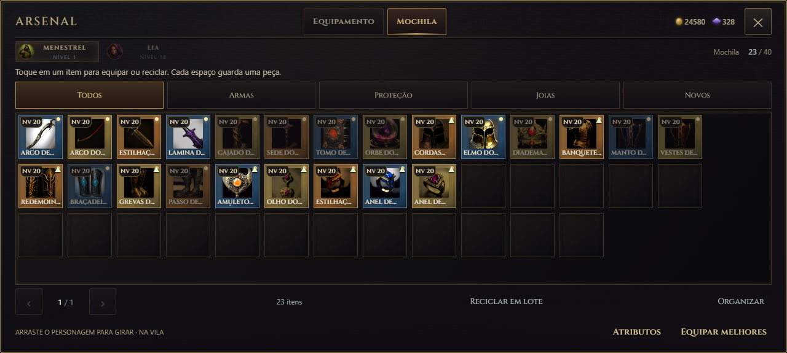
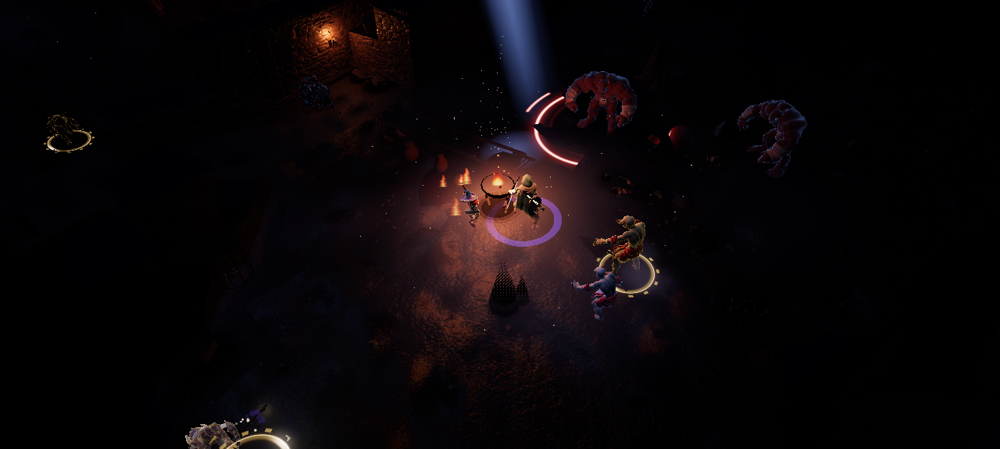

Há mais o que caçar e menos coisa jogada no chão. As catacumbas ganharam névoa rasteira, raízes, lápides e desabamentos.
22 equipamentos novos
No nível médio (7 a 9) chegam o Arco de Chifre, a Espada do Cruzado, o Cajado de Raiz Viva, o Tomo de Brasas, o Elmo do Corvo, o Manto da Meia-Noite, o Amuleto de Âmbar e o Anel de Safira. No nível alto (15 a 19) chegam o conjunto do Arauto (elmo, couraça, manoplas e grevas douradas), o Arco do Eclipse, a Lâmina de Obsidiana, o Cajado e o Orbe do Vazio, o Diadema de Rubi, as Vestes de Brasa, as Braçadeiras de Gelo, as Botas da Bruma, o Olho do Abismo e o Anel de Ametista. Cada peça tem ícone próprio e muda o visual do personagem.

As peças novas na mochila.
Saque mais raro
Cada item que cai vale mais. Monstro comum: de 4,5% para 2,8% de chance de soltar item. Brutamontes: de 12% para 8%. Elite: de 80% para 50%. Urnas: de 3% para 2%. Item extra dos baús: de 35% para 20%. Chefes, missões e contratos continuam com recompensa garantida.
Névoa rasteira
A névoa das catacumbas não tem luz própria: some no escuro e aparece rente ao chão onde as tochas, as velas e a luz do herói batem, com a cor do fogo. Fica mais densa nas salas alagadas, nas grutas e sobre os canais do esgoto, com tom de limo no esgoto, frio na cripta e de poeira avermelhada no ossário.

Névoa acesa pelo fogo numa gruta da cripta.
Mais variedade nas catacumbas
Raízes romperam o pé das paredes e rastejam pelo chão, mais comuns quanto mais fundo. A cripta e a capela têm lápides com cruz entalhada no chão. O teto desabou no meio de algumas salas grandes, e é preciso contornar a pilha. No esgoto, a água mina no pé das paredes.